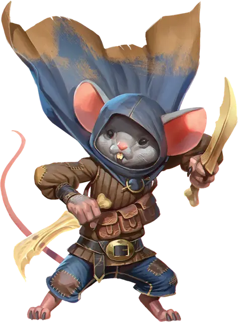

Гардинал мюстеваль
Musteval Guardinal
Маленький Небожитель, нейтрально-добрый

Класс Доспеха 13
Хиты 38 (11к6)
Скорость 35 футов
| мод | спас | ||
|---|---|---|---|
| СИЛ | 12 | +1 | +1 |
| ЛОВ | 16 | +3 | +5 |
| ТЕЛ | 11 | +0 | +0 |
| мод | спас | ||
|---|---|---|---|
| ИНТ | 14 | +2 | +2 |
| МДР | 15 | +2 | +2 |
| ХАР | 14 | +2 | +4 |
Навыки Восприятие +6, Скрытность +7
Сопротивление урону излучение
Иммунитет к состояниям испуг
Чувства пассивное Восприятие 16
Языки Общий, Небесный
Опасность 2 (450 опыта)
Бонус мастерства +2
Действия
Мультиатака. Мюстеваль совершает две атаки Костяным клинком.
Костяной клинок. . Рукопашная атака оружием: +5 к попаданию, досягаемость 5 футов, одна цель. Попадание: 6 (1к6+3) рубящего урона плюс 3 (1к6) урона излучением.
Использование заклинаний. Мюстеваль накладывает одно из следующих заклинаний, не нуждаясь в материальных компонентах, используя Харизму в качестве базовой характеристики:
• Неограниченно: пляшущие огоньки [dancing lights]
• 1/день: маскировка [disguise self], невидимость [invisibility]
Реакции
Перебежка в ходе стычки. Когда существо заканчивает свой ход в пределах 5 футов от мустеваля, мустеваль может переместиться на половину своей скорости. Это перемещение не провоцирует атак.
Описание
Мастевали - маленькие, похожие на мышей гардиналы, умеющие уклоняться от опасности. Их скорость, скрытность и магия иллюзий делают их искусными шпионами, снующими по мультивселенной, дабы служить великим силам добра.
Гардиналы
Кочевые и миролюбивые, гардиналы - это животные Небожители, родом из Элизиума. Гардинал напоминают гуманоидов со звериными чертами. В своем повседневном общении гардиналы воплощают красоту, спокойствие и праведность своего родного плана. Гардиналов можно найти на всех Внешних землях, особенно в Экстазии, портальном городе Элизиума, и в Фаунеле, портальном городе Звериных земель.
В то время как гардиналы обычно дружелюбны и не склонны к гневу, их сверхъестественная добродетель ставит их в противоборство со злыми существами Нижних планов. Гардиналы ненавидят зло и без колебаний выступают против несправедливости и злодейства, полные решимости искоренить силы, угрожающие красоте и миру.